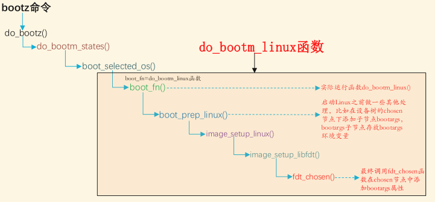

版权信息
warning
本文章为博主原创文章。遵循 CC 4.0 BY-SA 版权协议，转载请附上原文出处链接和本声明。
1. 设备树简介
1.1. 什么是设备树
在 Linux 内核（特别是 ARM 架构）开发中，设备树（Device Tree）是描述硬件信息的“地图”。它的核心目的是将硬件描述与驱动代码分离。
简单来说：
- 以前：你在
.c代码里写死“这个引脚是 GPIO 5，内存地址是 0x1000”。 - 现在：驱动代码只写逻辑（“我要读取一个 GPIO”），而具体的“GPIO 5”写在设备树文件（
.dts）里。
设备树可以理解为一个硬件描述文件：告诉内核板级外设的位置、参数、使用方式。
例如：
- GPIO 属于哪个控制器？
- 串口 1 的寄存器基地址在哪里？
- I2C 的速度是多少？
- 一个 LED 接在哪个 GPIO 引脚？
这些都通过设备树告诉内核。
1.2. 设备树的由来
在 2011 年之前（Linux 3.x 版本之前），ARM 架构的 Linux 内核源码中并没有设备树。那时候，描述板子硬件信息是直接写在 C 文件里的。本来ARM架构的板子就多，还他妈每个板子都要提交一个硬件描述文件，而且硬件描述文件大部分都是一些硬件地址的结构体，同一厂家生产的SoC提交的硬件描述文件还有很多重复的内容。
在这种情况下，Linux 之父 Linus Torvalds 在检查 ARM 架构的代码合并请求时，终于忍无可忍。他在邮件列表里发出了那封著名的邮件，痛斥 ARM 社区：
" This whole ARM thing is a f*cking pain in the ass." (“这整个 ARM 的东西简直就是屁股上的痛（极其痛苦）。”)
他指出 ARM 社区没有像 x86 那样有统一的硬件描述标准（x86 有 BIOS/ACPI），导致内核充斥着无关紧要的板级细节。他威胁说，如果不解决这个问题，就不再合并 ARM 的代码。
面对 Linus 的压力，ARM 社区的大佬们开始寻找解决方案。他们将 PowerPC 的这套机制移植到了 ARM 架构上。从此，硬件描述不再写在 C 代码里，而是写在独立的文本文件（.dts）里，经过单独编译成二进制（.dtb），由 Bootloader 传给内核。
我们还可以注意到即使是现在的6.x内核，其源码目录中的 /linux/arch/arm/mach-xxx 仍有许多.c文件，这些文件并不是硬件描述文件，而是负责让 SoC 能够正常启动并运行内核。比如CPU 初始化、timer 初始化、中断控制器初始化、电源管理等等。
2. 核心文件类型
在使用设备树之前，需要区分三种文件后缀：
| 后缀 | 全称 | 作用 | 类比 |
|---|---|---|---|
| .dts | Device Tree Source | 板级定义文件，描述具体的电路板硬件。 | .c 源文件 |
| .dtsi | Device Tree Source Include | SoC 级或通用的头文件，可被多个 dts 复用。 | .h 头文件 |
| .dtb | Device Tree Blob | 编译后的二进制文件，Bootloader 会把它传给内核。 | .o 或可执行文件 |
一般 .dtsi 文件用于描述 SOC 的内部外设信息，比如 CPU 架构、主频、外设寄存器地址范围，比如 UART、IIC 等等。这些信息在某些板子上是通用的，比如 imx6ul-14x14-evk.dtsi 就被 I.MX6ULL 的 dts 文件包含。
3. 编译设备树
在 Linux 内核源码中，ARM 架构的设备树通常位于 arch/arm/boot/dts/ (或 arch/arm64/boot/dts/)。
我们打开 arch/arm/boot/dts/nxp/imx/Makefile
这里的 Makefile 就记录了该平台下所有板子的设备树文件：
...
dtb-$(CONFIG_SOC_IMX6UL) += \
imx6ul-14x14-evk.dtb \
imx6ul-ccimx6ulsbcexpress.dtb \
imx6ul-ccimx6ulsbcpro.dtb \
imx6ul-geam.dtb \
...可以看出，当选中 I.MX6ULL 这个 SOC 以后(CONFIG_SOC_IMX6ULL=y)，所有使用到
I.MX6ULL 这个 SOC 的板子对应的.dts 文件都会被编译为.dtb。如果我们使用I.MX6ULL 新做了一个板子，只需要新建一个此板子对应的.dts 文件，然后将对应的.dtb 文件名添加到 dtb-$(CONFIG_SOC_IMX6ULL)下，这样在编译设备树的时候就会找到对应的.dts 编译为二进制的 .dtb 文件。
只编译设备树文件：make dtbs 或 make [具体的设备树文件名]
系统启动后，内核会将解析后的设备树以文件系统形式展示在 /proc/device-tree。
# 查看刚才添加的 LED 节点
ls /proc/device-tree/leds/
# 查看 compatible 属性
cat /proc/device-tree/leds/compatible4. 基本语法
设备树是一个树状结构，由节点（Node）和属性（Property）组成。
4.1. 节点
一个硬件模块就是一个节点：
/dts-v1/; // 版本号
#include "soc.dtsi" // 包含头文件
/{
aliases{
can0 = &flexcan1;
};
cpus{
#address-cells = <1>;
#size-cells = <0>;
cpu0: cpu@0 {
compatible = "arm,cortex-a7";
device_type = "cpu";
reg = <0>;
};
};
intc: interrupt-controller@00a01000 {
compatible = "arm,cortex-a7-gic";
#interrupt-cells = <3>;
interrupt-controller;
reg = <0x00a01000 0x1000>,
<0x00a02000 0x100>;
};
}“/”是根节点，每个设备树文件只有一个根节点。根节点会合并。
我们可以看到一些常见写法，如：
-
label: node-name@unit-address其中“node-name”是节点名字，为 ASCII 字符串，节点名字应该能够清晰的描述出节点的功能，比如“uart1”就表示这个节点是 UART1 外设。
“unit-address”一般表示设备的地址或寄存器首地址，如果某个节点没有地址或者寄存器的话“unit-address”可以不要，比如“cpu@0”“interrupt-controller@00a01000”。
引入 “label” 的目的是为了方便访问节点，可以直接通过 &label 来访问这个节点，比如通过 &cpu0 就可以访问“cpu@0”这个节点，而不需要输入完整的节点名字。
-
<number>：32 位无符号整数。可以设置为一组值，比如：、
“reg = <0 0x123456 100>;”
4.2. 两个特殊节点
4.2.1. aliases
用于定义别名。不过我们一般会在节点命名的时候会加上 label，然后通过&label
来访问节点，这样也很方便。
4.2.2. chosen
chosen 并不是一个真实的设备，chosen 节点主要是为了 uboot 向 Linux 内核传递数据，重点是 bootargs 参数。
下图为 uboot 向 chosen 节点添加 bootargs 参数的调用链：

4.3. 属性
这是在修改设备树时最常用的几个属性：
4.3.1. compatible (兼容性)：
- 作用：这是设备树与驱动程序的“暗号”。内核通过这个字符串将设备节点与驱动程序匹配起来。
- 格式：
"厂商,模块驱动名"。 - 例子：
compatible = "fsl,imx6ul-evk-wm8960","fsl,imx-audio-wm8960";
一般驱动程序文件都会有一个 OF 匹配表，此 OF 匹配表保存着一些 compatible 值，如果设备节点的 compatible 属性值和 OF 匹配表中的任何一个值相等，那么就表示设备可以使用这个驱动。
属性值有两个的话，首先使用第一个兼容值在 Linux 内核里面查找，看看能不能找到与之匹配的驱动文件，如果没有找到的话就使用第二个兼容值查。
4.3.2. status (状态)：
- 作用：控制设备是否启用。
- 常用值：
"okay"(启用),"disabled"(禁用)，“fail”。 - 场景：SoC 内部有很多控制器（如 I2C3），板子没用到，就在
.dts里设为disabled；如果用到了，就改为okay。
4.3.3. reg (寄存器/地址)：
- 作用：描述设备的地址资源（内存映射地址、I2C 地址等）。
- 格式：通常是
<地址 长度>或<I2C地址>。
4.3.4. label 与 phandle (引用)：
- 作用：让节点之间互相引用。
- 符号：
&。例如&i2c1表示引用标签为i2c1的节点。
4.3.5. #address-cells 和 #size-cells ：
- 作用：决定了子节点 reg 属性中地址信息和长度信息所占用的字长(32 位)。
- 例子：
#address-cells = <1>;#size-cells = <0>;，表明子节点 reg 值，地址占一个字长，长度无。
4.3.6. ranges
- 作用：表示将子节点地址向父节点地址的转换。
- 格式：
<local地址， parent地址， size>
比如对于 #address-cells 和 #size-cells 都为1，以<0x0 0x10 0x20>为例，表示将 local 的 从 0x0~(0x0 + 0x20) 的地址空间映射到 parent 的 0x10~(0x10 + 0x20)。
ranges属性值为空的话，表示1:1映射。
4.4. 追加内容
相在某一父节点下添加一个子节点，你可以直接在那个父节点下添加。
或者直接使用 & 符号+label名，表示在这个节点下追加属性。
肥肠的煎蛋。
&i2c1 {
/* 要追加或修改的内容 */
};5. 设备树的编写规范
5.1. 查阅编写规范
打开linux源码目录 Documentation/devicetree/bindings 它是设备树（Device Tree）规范的“官方说明书”，里面定义着不同厂商的不同设备的设备树的编写规范。
具体来说，里面的每一个 .yaml 或 .txt 文件，都在描述某一类硬件设备在设备树中应该如何被正确地写出来。
也就是：
- 它有哪些必需属性（
reg、compatible…） - 可选属性有哪些
- 各个属性是什么含义
- 属性的类型和合法取值是什么
- 示例（示范 devicetree 节点怎么写）
Linux 内核靠它们来校验设备树 DTS 文件是否符合规范。
当你
make dtbs或dt-validate时，dt-schema工具会检查 DTS 是否按照 bindings 的要求去写。若有问题，会直接报错。
5.2. 为什么有编写规范
因为世界上 SoC/外设千千万，每个设备的写法不同。
为了避免不同厂家乱写导致兼容性和维护困难，内核社区采用：
- 统一规范（binding）
- 统一校验（dt-schema）
这样：
- 社区可以维护通用格式
- DTS 文件编译时可以自动报错（提示写法不规范）
- 驱动开发者知道设备树应该怎样写
5.3. 看懂编写规范
以一个典型的 YAML binding 为例，它会包含：
5.3.1. compatible 字段
列出这个驱动支持的硬件型号
compatible:
const: "nxp,imx6ull-uart"5.3.2. 必须的属性
properties:
reg:
maxItems: 1
interrupts:
maxItems: 1
required:
- compatible
- reg
- interrupts5.3.3. 可选属性
如 clocks、dmas 等。
5.3.4. 示例
examples:
- |
uart1: serial@02020000 {
compatible = "nxp,imx6ull-uart";
reg = <0x02020000 0x4000>;
interrupts = ;
};这些示例是你写 DTS 时最可靠的参考。
6. 驱动程序获取设备树属性
设备都是以节点的形式“挂”到设备树上的，因此要想获取这个设备的其他属性信息，必须先获取到这个设备的节点。Linux 内核使用 device_node 结构体来描述一个节点，此结构体定义在文件 include/linux/of.h 中。
通过 OF(OpenFirmware) 系列函数，我们可以查找这些 device_node 变量类型的结构体，并从中获取对应设备的属性。
这些函数的用途在函数名已有体现。
例如常用的一些查找函数：
of_find_node_by_name
struct device_node*
of_find_node_by_name(struct device_node
* from, const char* name)of_find_compatible_node
struct device_node*
of_find_compatible_node(struct device_node* from, const char* type, const char* compatible)of_find_matching_node_and_match
struct device_node* of_find_matching_node_and_match(structdevice_node* from, const struct of_device_id* matches, const struct of_device_id** match)of_find_node_by_path
inline struct device_node* of_find_node_by_path(const char* path)OF函数在驱动的编写中很重要，受限于篇幅原因就不一一介绍了，有可能后续再开一篇来介绍。
最后来一张表格总结常用的：
| 功能 | 函数 |
|---|---|
| 查找节点 | of_find_compatible_node() |
| 基础属性读取 | of_get_property() |
| 读 u32 | of_property_read_u32() |
| 读字符串 | of_property_read_string() |
| 读 reg → resource | of_address_to_resource() |
| 读 reg → 虚拟地址 | of_iomap() |
| 获取 IRQ | of_irq_get() |
| 是否有某属性 | of_property_read_bool() |
| 匹配 compatible | of_match_device() |
| 遍历节点 | for_each_child_of_node() |
7. 参考资料
【正点原子】I.MX6U嵌入式Linux驱动开发指南V1.81